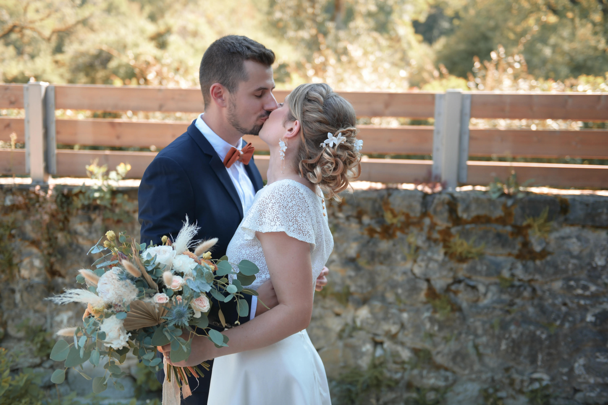

Après tant de préparation et de péripéties, le grand jour est finalement arrivé ! Vous voilà enfin mariés après deux merveilleuses cérémonies.
Vu mes talents de calligraphe, voici ma carte de vœux à l'ère du numérique...
Je voulais d'abord vous remercier à tous les deux d'avoir pu partager ces moments avec vous et merci à toi, Ludo, de m'avoir choisi en tant que témoin. J'espère que nous avons été à la hauteur de vos attentes et que vous avez passé un aussi bon moment que nous !
Même si après autant d'années, je ne pense pas que cela soit pertinent de le dire, je vous souhaite tout le meilleur pour tout ce qu'il vous reste à venir et surtout le plus important, continuez d'être une inspiration pour nous tous.
Thomas
